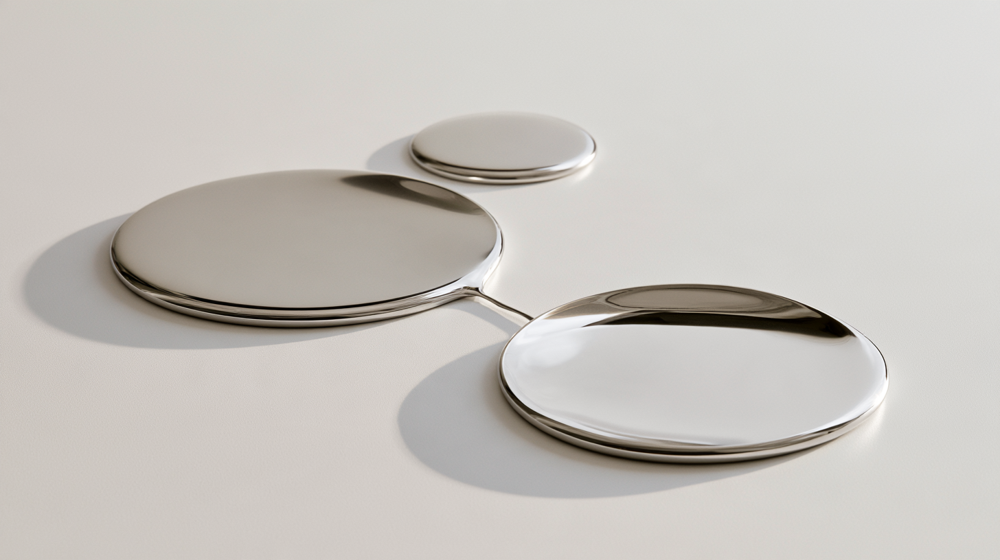
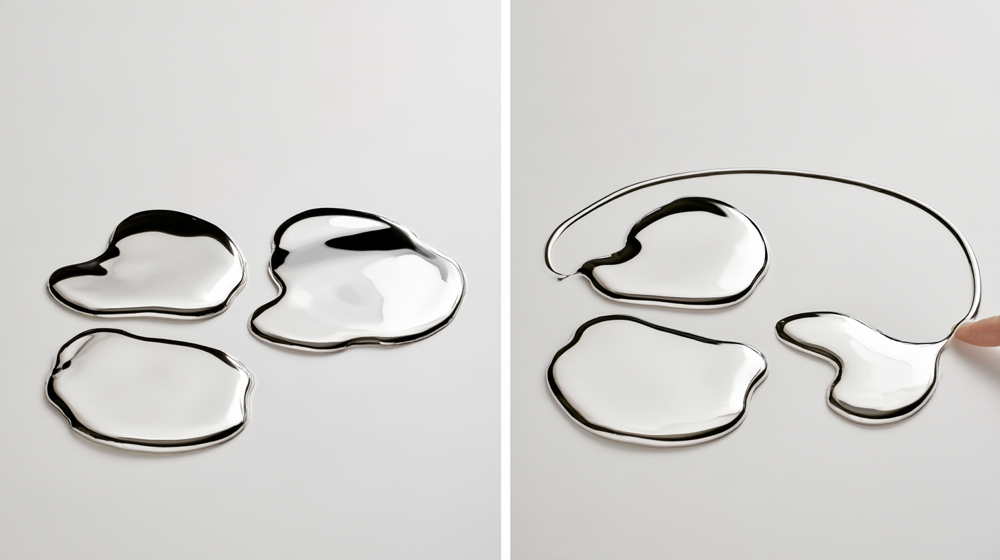
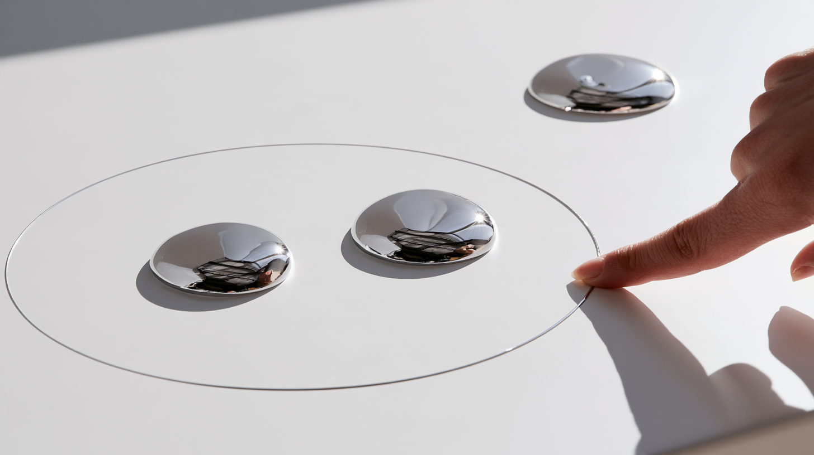

Quicksilver
Touch is input.
Behavior is output.

The premise
What if information were a material you could manipulate with your hands?
Pull one pool into two. Push two together. Draw a connection. Break it. Draw a boundary around a group.
The physical action already expresses the intent.
It changes back.
Touch
The same material carries both sides of the conversation.
Your touch changes its topology. A connection can be drawn directly between two things without opening a tool, choosing a mode or describing the relationship.

Then take your hands away.
Trace
Run a finger through the material and leave a temporary trace. Name something. Divide it. Teach it a relationship.
The material can remember what happened without displaying every interaction forever.
Belong together
A connection says these relate.
A boundary says these belong together.

No legend is required. The relationship is spatial.
Behavior
Now stop touching it.
Quicksilver can gather, separate and reorganize itself. A connection may reappear. Two things may drift toward each other. Something inside a group may resist staying there.

Morphable
Quicksilver isn't mercury. It is an imagined computational material whose defining quality is viscosity.
Viscous enough to hold a thought.
Fluid, it can flow and reorganize. More viscous, it can stretch, divide, hold relationships and be picked up like putty.
Press it against something and lift it away.
Press it somewhere else.
No upload button. No selection rectangle. Touch the thing you mean.
Graspable
The information can be complex. The material should remain graspable.
Keep the working set small enough to gather in your hands. Pull it apart when you need distinctions. Bring it back together when you don't.
Quicksilver is material that thinks back.
Not a liquid-metal visualization. A shared input and output medium: you express intent by manipulating it, and computation answers through the behavior of the same material.